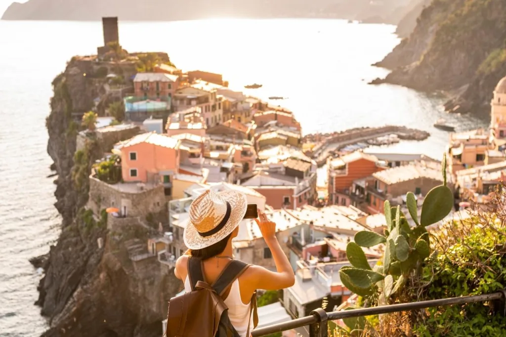

Viaja por Italia: Rutas, cultura y lugares que no puedes perderte
En Viaggio in Italia encontrarás todo lo que necesitas para planificar tu
próxima
aventura en
Italia. Desde las ciudades
más famosas hasta los rincones ocultos, descubre itinerarios, recomendaciones de lugares y consejos
prácticos
para disfrutar de la auténtica Italia.
Conoce al Equipo que acompañara en tu Aventura
En nuestra compañía, somos un equipo apasionado por Italia y por crear experiencias inolvidables
para
nuestros viajeros.
Cada uno de nosotros aporta su conocimiento y amor por este maravilloso país, asegurándonos de
que
tu
viaje sea único,
auténtico y lleno de momentos especiales. Ya sea que busques sumergirte en la historia,
disfrutar de
la
gastronomía local
o descubrir rincones secretos, estamos aquí para ayudarte a crear el itinerario perfecto. Con
años
de
experiencia en turismo,
planificación de viajes y un profundo amor por Italia, nos comprometemos a brindarte un servicio
cercano
y personalizado,
para que solo te preocupes de disfrutar de cada momento. ¡Nos encantaría ser parte de tu próxima
aventura!
Valores y Principios
En nuestra empresa, cada decisión está guiada por nuestros valores fundamentales, que son los
pilares
de
nuestra manera de
trabajar y de ofrecerte la mejor experiencia en Italia. Creemos firmemente en la autenticidad,
la
sostenibilidad y el
compromiso con nuestros viajeros